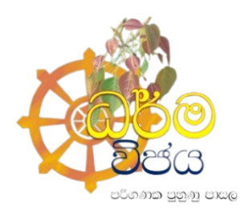
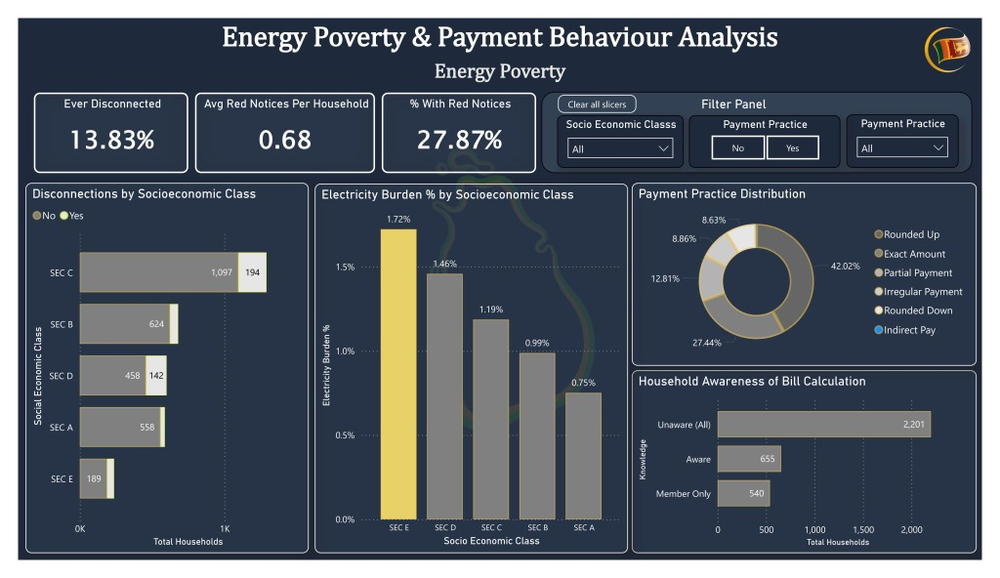
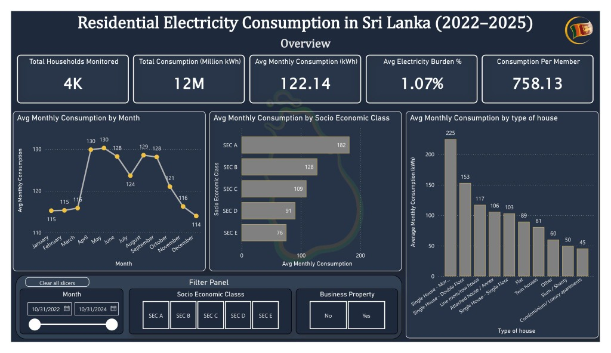
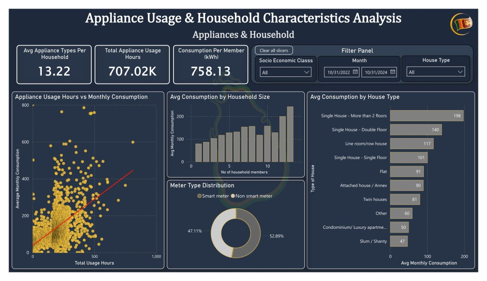
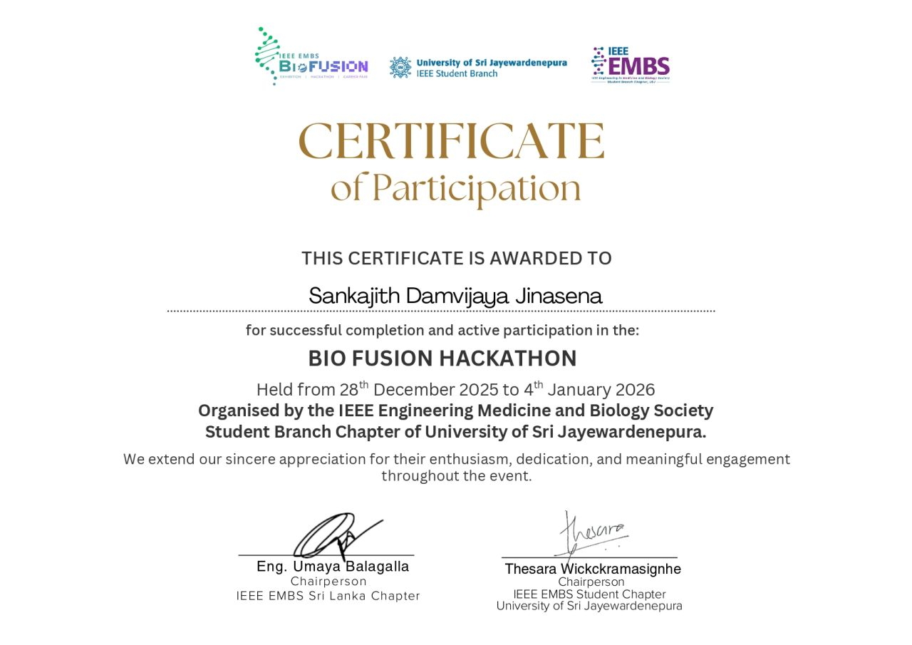

I’m a passionate Data Science undergraduate at
Sabaragamuwa University of Sri Lanka, dedicated to
continuous learning and skill development. I enjoy tackling
real-world problems through data-driven solutions, paying close
attention to detail, and collaborating effectively with teams.
My interests include Machine Learning, Artificial Intelligence,
Data Engineering, and Full-Stack Development.
I am a 3rd-year undergraduate pursuing a BSc (Hons) in Data Science at
Sabaragamuwa University of Sri Lanka (maintaining a 3.7 CGPA).
I specialize in transforming complex raw datasets into actionable intelligence, building predictive machine learning models,
and architecting autonomous multi-agent AI systems.
My technical capability bridges Machine Learning, Deep Learning, Business Intelligence (Power BI), and Full-Stack Engineering.
Whether engineering self-correcting LangGraph multi-agent systems, trilingual AI advisory apps with FAISS vector search engines,
or crisis-level energy poverty dashboards, I bring analytical rigor and innovative problem-solving to every challenge.
AI & Multi-Agent Systems
LangGraph, PyTorch, FAISS & Groq LLMs
BI & Data Analytics
Power BI, DAX, Star Schema & Pandas
Full-Stack Engineering
FastAPI, React, Python, PHP & MySQL
Education & PerformanceBSc Data Science (CGPA: 3.7)
LocationKandy, Sri Lanka
Email Addresssankajithdjinasena@gmail.com
Contact Number+94 71 354 5642
My Experience
Digital Service Assistance
Commercial Bank - KCC branch 2023 Oct - 2024 Apr
Digital Services Associate, or DSA for short. Digital services are incredibly quick and simple. The
main app at Commercial Bank is called Combank DIgital; additional applications include Q plus and
Flash. As a DSA, my responsibilities include marketing digital services, educating clients,
supporting clients who use these services, and tracking clients' usage. My knowledge of banking,
customer service, and problem-solving skills for digital services are all being developed by this
position.
This contract by Micronet Global Services (Pvt) Ltd

IT Consultant
Dharmavijaya Computer Training School 2023 Feb - 2024 Feb
I was fully versed with Microsoft Office (Word, PowerPoint, Excel, Access, etc.), basic programming
(Python, HTML, CSS), video editing, and computer hardware because I worked in a computerized
workplace. My technical, managerial, and instructional abilities are all improved by this work.
Dharmavijaya Computer Training school
Registration No: DVS/6/5/64/34
My Education
Undergraduate in Data Science (BSc Hons)
Sabaragamuwa University, Sri Lanka 2024 - Present | CGPA: 3.7
Coursework spanning machine learning, artificial intelligence, data analytics, and software engineering, applied through academic and independent projects. Focusing on predictive models, data engineering, and multi-agent AI systems.
Student
Dharmaraja College 2020 - 2023
I faced Advanced Level Exam in 2022(2023) in physical scheme including subjects Combined maths,
physics and chemistry. I passed with 2B's and one C with 1.3509 z-score.
Student
Dharmaraja College 2008 - 2019
My school is Dharmaraja College, Kandy. It's one of best school in Sri Lanka. In 2019 I faced to O/L
examination and I passed with 8A's and one B. In 2020 again I faced to O/L examination to do
secondary subject(Tamil) and I got C pass.
Completed Introduction to Data Analytics by IBM on Coursera. Gained foundational knowledge in data analysis concepts, tools, and techniques including data visualization, data cleaning, and exploratory data analysis. Developed skills to interpret data and support data-driven decisions effectively.
Completed Power BI for Beginners course from Simplilearn. Gained hands-on skills in data visualization, Power BI Desktop, DAX functions, dashboards, and reporting. Learned how to connect data sources, transform data, and build interactive visual reports for data-driven decision-making.
Completed SQL Intermediate course on Sololearn. Enhanced skills in querying databases, using JOINs, subqueries, aggregate functions, and data manipulation. Strengthened ability to work with relational databases and write efficient SQL queries for real-world applications.
Successfully completed a practical, hands-on course in Python programming offered by the University of Moratuwa (CODL).
This course covered core programming fundamentals and introduced me to Python's use in automation, data handling, and problem-solving
Completed Google’s Fundamentals of Digital Marketing course, accredited by the IAB. Covered 26 modules including SEO, SEM, social media, email marketing, content strategy, analytics, and mobile marketing. Gained a strong foundation in digital marketing tools and strategies to effectively plan, execute, and measure online campaigns.
Completed the Data Analytics with AI course on Sololearn. Gained proficiency in using Python for data analysis and machine learning, including data visualization, statistical analysis, and predictive modeling. Developed skills in working with real-world datasets and applying AI techniques to derive actionable insights.
Technical Skills
Python
React
FastAPI
LangChain & LLMs
PyTorch
Scikit-learn
Tensorflow
MySQL
Numpy
PowerBI
HTML/CSS
PHP
Java
Filmora
Latest Projects
Powering Through Crisis: Sri Lanka Residential Electricity Affordability Analysis
2026 Sep



Analyzed 4,063 households in LECO service area (RECON-SL dataset, IEEE DataPort) post-economic crisis.
Built a 3-page interactive Power BI dashboard uncovering energy poverty: poorest households spend 1.72% of income on power (vs 0.75% for wealthy), 13.83% faced disconnection, and 64.8% lack bill calculation awareness.
Explored 39.6K Uber bookings ($590.3K booking value, 134K trip miles) to uncover key travel and revenue patterns.
Built interactive Power BI dashboards combining KPI cards, day vs. night trip breakdowns, pickup/drop-off location heatmaps, vehicle preferences (UberX leading), and hourly/daily time-series trends.
Power BIDAXBusiness IntelligenceTime-SeriesHeatmaps
A Level 3 autonomous, LangGraph-orchestrated 5-agent career coaching system featuring adaptive mock interviews,
real-time job and course web search, and self-correcting JSON validation loops for career planning.
A trilingual (English, Sinhala, Tamil) AI farm advisory application with a FAISS-indexed knowledge base
and Groq LLM agents providing real-time crop advisory, weather forecasts, fertilizer recommendations, and market-price analysis.
A centralized university resource-booking platform with role-based access for students, faculty, and administrators.
Uses priority-based scheduling for conflict-free allocation and dynamic waitlist routing for over-capacity requests.
A Python-based desktop application that enables users to efficiently explore, clean,
visualize, and analyze CSV datasets through an intuitive graphical interface.
Provides real-time data previews, automated data cleaning, interactive plots, and comprehensive statistical insights.
A real-time AI-powered surveillance system that detects animals entering a home environment,
classifies them as safe or dangerous, and sends instant email alerts for potential threats using YOLO object detection and OpenCV.
Associated with Sabaragamuwa University | 2025 Aug - 2025 Nov
Web-based health tracker with AI-driven predictions, personalized recommendations, and
dashboards for users and doctors, integrating full-stack development with machine learning for preventive healthcare.
Associated with Sabaragamuwa University | 2025 Aug - 2025 Nov
Analyzed nearly four decades of Microsoft stock price data (1986 - 2025) using probability theory and
statistical models to study return behavior, risk metrics (VaR/CVaR), and Monte Carlo price simulations.
Associated with Sabaragamuwa University | 2025 Feb - 2025 Jun
RideSync is a web prototype modernizing public transport administration by integrating route scheduling,
digital ticket booking, fleet management, and passenger feedback into a centralized platform.
Associated with Sabaragamuwa University | 2024 Sep - 2024 Oct
Explored mobile device usage patterns to classify user behavior using real-world Kaggle datasets.
Executed the full data science pipeline from data cleaning/EDA to training predictive ML classifiers.
Machine learning-based environmental prediction system forecasting water quality levels from historical data.
Integrates regression and classification models into an interactive web application.
Exploratory data analysis of Netflix Movies and TV Shows dataset.
Visualized genre distributions, content rating trends, country-level production, and release year trajectories.
IoT-integrated healthcare system analyzing physiological attributes of pregnant women (age, blood pressure, sugar, heart rate)
to predict risk levels and assist maternal health assessment.
Selected from a competitive pool of inter-university participants as a Top 15 Finalist at Codemania V6.0.
This recognition highlights exceptional teamwork, innovative thinking, and the ability to apply data-driven
approaches to solve complex problems in a fast-paced environment.
Bio Fusion Hackathon Participant - Team Deadlock

Demonstrated enthusiasm, dedication, and meaningful engagement during the Bio Fusion Hackathon hosted by the
University of Sri Jayewardenepura's IEEE EMBS chapter. Successfully collaborated and competed throughout the week-long event.
CryptX 2.0 Finalist - Team Predictra
Demonstrated enthusiasm, dedication, and active participation during the CryptX 2.0 hackathon organized by the
Information and Communication Technology Society (ICTS) at the Faculty of Technology, University of Sri Jayewardenepura.
Collaborated effectively with peers and secured a position as one of the Top 15 finalists in the week-long event.
CIPHER 2.0 - Top 10 Finalist - Team Predictra
Selected as a Top 10 Finalist among inter-university teams at CIPHER 2.0, with the final pitch held at the IIT Auditorium. Showcased analytical capabilities and predictive data modeling skills.
BitCode 6.0 Finalist - Team Deadlock
Demonstrated enthusiasm, dedication, and active participation during the BitCode 6.0 hackathon organized by the
Business Information Technology Students' Association of Rajarata University.Collaborated effectively with peers and secured a position
as one of the Top 10 finalists in the week-long event.
My Volunteering
STEMUP - CodeClub - April 25th, 2026
Empowering the next generation of innovators!
On April 25th, 2026 I had the wonderful opportunity to volunteer with the STEMUp Educational Foundation at the Balangoda Library.
It was an inspiring session where we introduced students to the fundamentals of Scratch and worked together on creative problem-solving challenges.Seeing the curiosity and enthusiasm
of these young learners as they wrote their first lines of logic was incredibly fulfilling. I’m a firm believer that teaching is one of the best ways to give back to the tech community,
and I truly enjoyed every moment of it.Thank you, STEMUp, for the opportunity to contribute to such a meaningful initiative!
STEMUP - CodeClub - Sep 9th, 2025
Grateful for the opportunity to volunteer with STEMUP Educational Foundation and share knowledge on IT & web programming with bright school students!
It was inspiring to see their curiosity, creativity, and eagerness to learn. I believe initiatives like these help empower the next generation to build
innovative solutions and shape the future of technology.
ITECH 2.0 - May 28th, 2025
Proud to Represent Sabaragamuwa University of Sri Lanka!
I had the incredible opportunity to participate as a volunteer at the ITECH 2025 Knowledge Sharing Exhibition,
held at B/Karandagasdeniya Maha Vidyalaya.It was an inspiring experience to represent Sabaragamuwa University of
Sri Lanka and engage with bright young minds while sharing knowledge in technology and innovation. Events like these
remind me of the power of community-driven education and the impact we can make by volunteering our time and skills.
A heartfelt thanks to the organizers and the school for hosting such a valuable event!
Volunteer – Rotaract Club of SUSL 2025 - Present
Contributing mainly on the technical side, supporting the club’s IT infrastructure, web platforms, and digital activities to empower campus initiatives and community service projects.
Academic & Professional References
Professor S. Vasanthapriyan, Ph.D, SMIEEE
Professor in Computer Science Faculty of Computing, Sabaragamuwa University of Sri Lanka

.jpg)
.jpg)
.jpg)
.jpg)
.jpg)
.jpg)
.jpg)
.jpg)


.jpg)
.jpg)
.jpg)
.jpg)
.jpg)
.jpg)
.jpg)
.jpeg)
.jpg)
.jpg)
.jpg)
.jpg)
.jpg)
.jpg)
.jpeg)
.jpeg)
.jpeg)
.jpeg)
.jpeg)
.jpg)
.jpg)
.jpg)
.jpg)
.jpg)
.jpg)
.jpg)